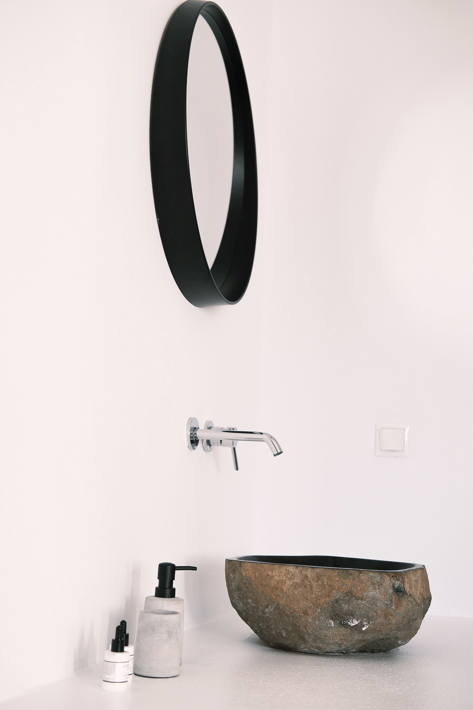
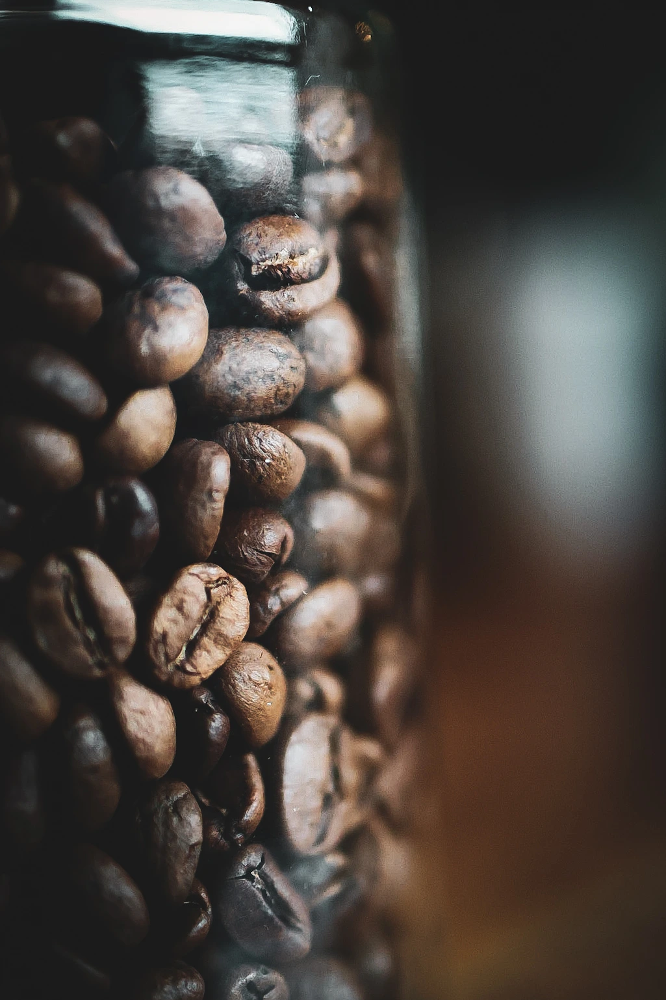
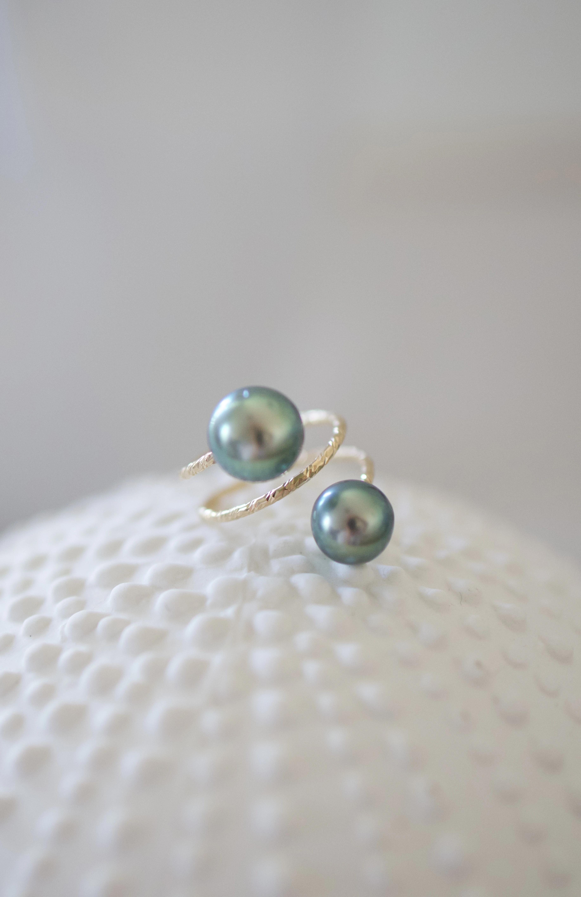
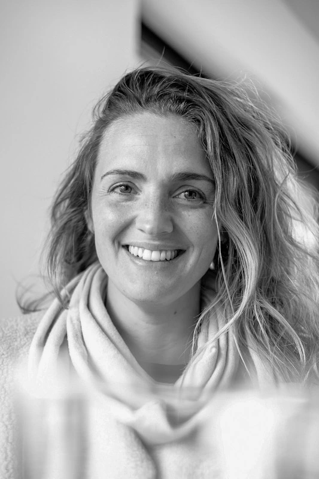
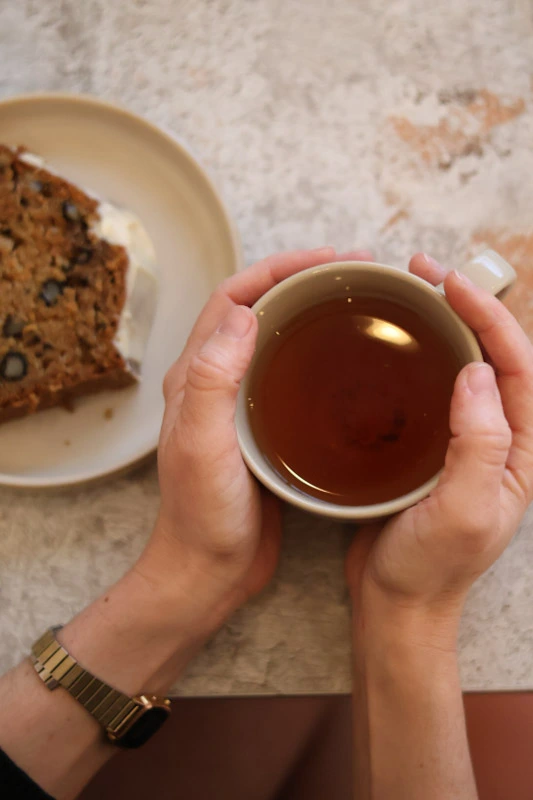
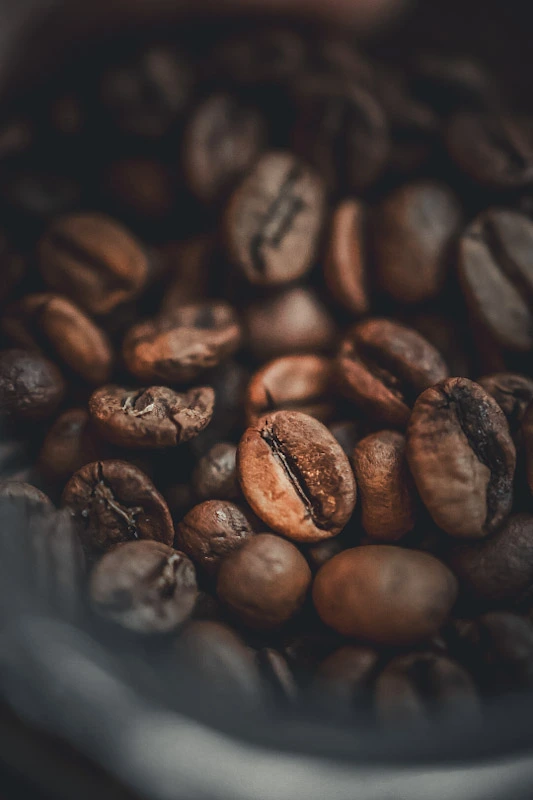
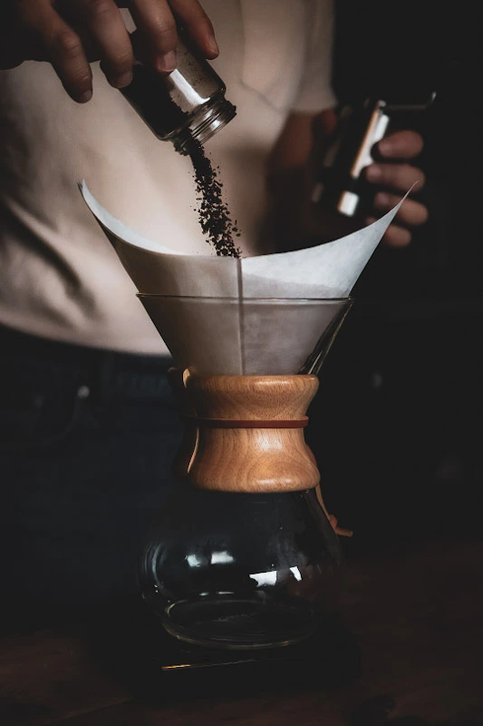
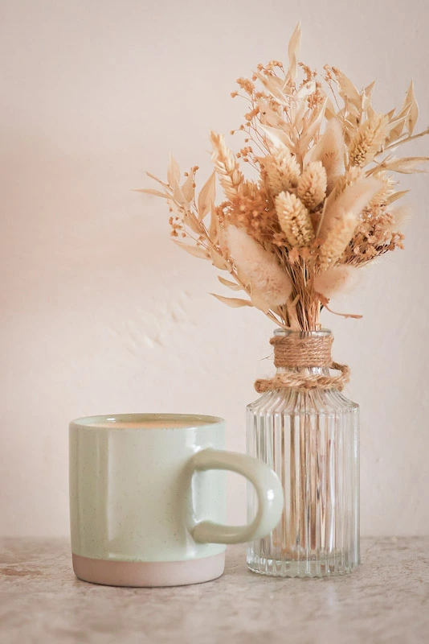
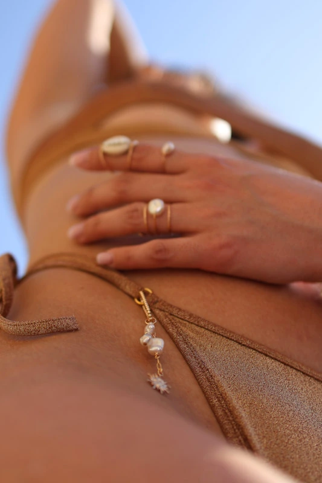

Photographe Personal Branding & Corporate
Des images professionnelles, naturelles et impactantes
Parce qu'une image forte ne se contente pas d'être belle.
Elle vous positionne.
Je suis photographe spécialisée en personal branding et corporate. J'accompagne les entrepreneurs, indépendants et entreprises à valoriser leur image via des visuels adaptés. J'écoute, je m'adapte aux différents univers et je fais confiance à mon instinct.
Mon approche est à la fois professionnelle et humaine, parce que je crois que les meilleures photos naissent de l'échange. Je sais être discrète quand il le faut et être présente quand c'est nécessaire.
Je ne cherche pas à transformer. Je cherche à révéler ce qui est déjà là et qui doit être vu.

On vit dans un monde où le «beau» attire, capte et donne envie.
Avant même de lire, on regarde et c'est souvent là que tout se décide. Mais une photographie maîtrisée ne se contente pas d'être esthétique : elle positionne, valorise et inspire confiance.
En gros, le beau attire, le détail rassure, l'image donne envie. Et aujourd'hui, c'est exactement ce qui fait la différence. Miser sur des visuels de qualité, c'est se démarquer, faire la différence entre être vu… et être choisi.
Une sélection de mon travail





Pour Qui
Personal Branding
Des portraits naturels pour valoriser votre image et votre activité.
Corporate
Des images professionnelles pour votre entreprise et vos équipes.
Reportage
Capturer votre activité dans son environnement réel.
Discutons de votre projet
Basée dans le Pays d'Aix, je réalise vos shootings à Aix-en-Provence, Pertuis, Manosque et dans toute la région. Des déplacements sont possibles au-delà, n'hésitez pas à me contacter pour en discuter.
Me contacter